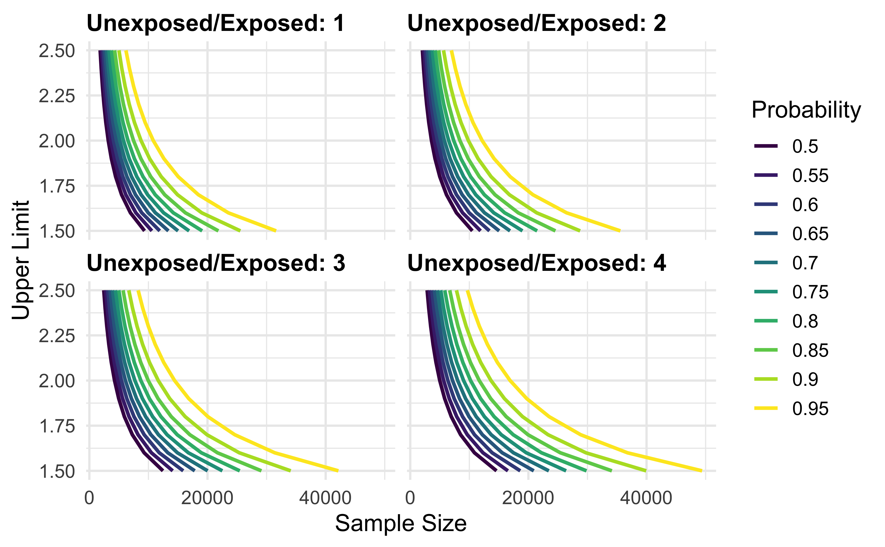

precisely is a study planning tool to calculate sample size based on precision rather than power. Power calculations are focused on whether or not an estimate will be statistically significant; calculations of precision are based on the same principles as power calculation but turn the focus to the width of the confidence interval.
This package includes a Shiny app to help with calculations, which you can start with launch_precisely_app(). You can also find a live version at malcolmbarrett.shinyapps.io/precisely.
For more, see the vignette.
These tools are based on the work of Rothman and Greenland.
Installation
You precisely from CRAN with:
install.packages("precisely")
You can install the development version of precisely with:
# install.packages("devtools") devtools::install_github("malcolmbarrett/precisely")
Example
precisely has functions for studies using risk differences, risk ratios, rate differences, rate ratios, and odds ratios. The heart of these calculations is the desired precision. For ratio measures, this is the ratio of the upper to lower limit of the confidence interval. For difference measures, this is the absolute width of the confidence interval. To calculate sample size for a given precision, you also need proportions for the two groups (the risk or rate in the exposed and unexposed participants in a cohort study or the exposure prevalence in the cases and controls in case-control studies), the ratios of the two groups (the unexposed to the exposed in cohort studies or controls to cases in case-control studies), and the desired confidence interval probability. The default is 95%.
Let’s say we want to calculate the sample size needed to estimate a 90% CI for a risk difference of .1 with an absolute width of .08. Here, the risk among the exposed is .4, the risk among the unexposed is .3, and there are three times as many unexposed participants.
library(precisely) n_risk_difference( precision = .08, exposed = .4, unexposed = .3, group_ratio = 3, ci = .90 ) #> # A tibble: 1 x 9 #> n_exposed n_unexposed n_total risk_difference precision exposed unexposed #> <dbl> <dbl> <dbl> <dbl> <dbl> <dbl> <dbl> #> 1 524. 1573. 2097. 0.1 0.08 0.4 0.3 #> # … with 2 more variables: group_ratio <dbl>, ci <dbl>
precisely also provides functionality to calculate the precision of an estimate given a sample size and to calculate sample size based on probability that the upper limit of the confidence interval is below a level of concern.
To calculate several values and plot them, use map_precisely() and the included plot_*() functions.
library(tidyverse) map_precisely( upper_rate_ratio, upper_limit = seq(1.5, 2.5, by = .1), prob = seq(.50, .95, by = .05), exposed = .01, unexposed = .01, group_ratio = 1:4 ) %>% group_by("Probability" = factor(prob)) %>% plot_upper_limit(line_size = 1) + scale_color_viridis_d() + scale_x_continuous(breaks = scales::pretty_breaks(3)) + theme_precisely() + theme(legend.position = "right") + facet_wrap(~ group_ratio, labeller = as_labeller(function(x) paste("Unexposed/Exposed:", x)))

Code of Conduct
Please note that the precisely project is released with a Contributor Code of Conduct. By contributing to this project, you agree to abide by its terms.